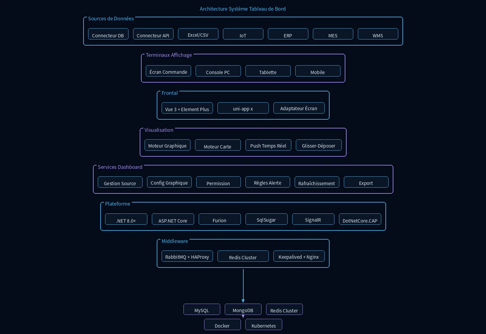

Les entreprises génèrent d'immenses quantités de données dispersées au cours de leurs opérations quotidiennes, et les rapports traditionnels peinent à présenter les indicateurs clés et les tendances métier en temps réel. Le Système de Tableau de Bord intègre de multiples sources de données, offre des graphiques riches, le rafraîchissement en temps réel et des mises en page glisser-déposer pour transformer des données complexes en vues de gestion intuitives, supportant le centre de commande et d'autres scénarios pour aider les entreprises à prendre des décisions basées sur les données, améliorer la transparence opérationnelle et la vitesse de réponse.
Fonctionnalités clés
Intégration de Données
Unification et agrégation de sept types de sources de données hétérogènes—bases de données, API, Excel/CSV, IoT, ERP, MES et WMS—via des connecteurs standardisés, brisant les silos de données et réalisant une intégration de données en un seul point.
Graphiques Riches
Les moteurs de rendu de graphiques et de cartes intégrés prennent en charge les graphiques linéaires, à barres, circulaires, les jauges, les cartes de chaleur géographiques et plus encore, répondant aux divers besoins de visualisation dans les scénarios métier.
Rafraîchissement en Temps Réel
Propulsé par le moteur de push en temps réel SignalR, les changements de données sont instantanément rafraîchis sur le tableau de bord, combinés au rafraîchissement planifié pour garantir que la direction dispose toujours des dernières informations métier.
Mise en Page Glisser-Déposer
Le moteur de mise en page glisser-déposer sans code permet aux utilisateurs d'ajuster librement les positions, tailles et superpositions des graphiques, permettant une création rapide de tableaux de bord personnalisés sans développement, réduisant la barrière d'utilisation.
Contrôle des Permissions
Double contrôle granulaire des permissions au niveau page et données garantissant que différents rôles ne peuvent consulter que les indicateurs et rapports autorisés, protégeant la sécurité des données d'entreprise.
Affichage Multi-Terminal
Le moteur d'adaptation grand écran s'adapte automatiquement aux centres de commande, PC, tablettes et téléphones mobiles, prenant en charge le lien multi-écrans et l'affichage adaptatif, couvrant tous les scénarios du centre de commande au bureau mobile.
Scénarios d'application

Système de Tableau de Bord
Le Système de Tableau de Bord agrège les données multi-sources en graphiques visuels intuitifs, supportant la surveillance en temps réel et la prise de décision.

Scénario Centre de Commande
Tableau de bord de commande en visualisation sur grand écran, agrégeant les données multi-sources en temps réel, permettant aux dirigeants de maîtriser rapidement la situation globale et de prendre des décisions précises en salle de réunion ou en centre de commande.

Avantages du système
Prise en charge de l'agrégation en temps réel de données multi-sources, capable de se connecter à des systèmes hétérogènes tels que ERP, MES, WMS et plateformes IoT. Indicateurs et règles d'alerte personnalisables permettant aux dirigeants de configurer autonomément les métriques et seuils. Conception par glisser-déposer sans code abaissant la barrière d'entrée. Affichage adaptatif grand écran, PC et mobile répondant aux besoins de support à la décision dans différents scénarios.
Architecture du système

Le système adopte une architecture d'agrégation multi-source et de rendu de visualisation : sept types de sources de données—connecteur DB, connecteur API, Excel/CSV, IoT, ERP, MES et WMS—sont unifiés et agrégés ; le moteur de rendu de graphiques, le moteur de cartes, le moteur de push en temps réel et le moteur de glisser-déposer forment une couche indépendante de moteurs de visualisation ; le moteur d'adaptation grand écran prend en charge l'adaptation de résolution de l'écran de commande et le lien multi-écrans, tandis que SignalR permet le push de données en temps réel ; le service de permission implémente un contrôle granulaire au niveau page/données, Redis met en cache les indicateurs en temps réel, et MongoDB stocke les définitions de graphiques et les données historiques.